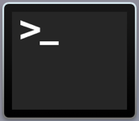
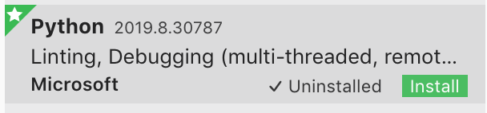
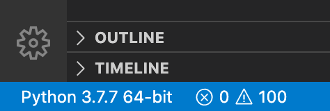
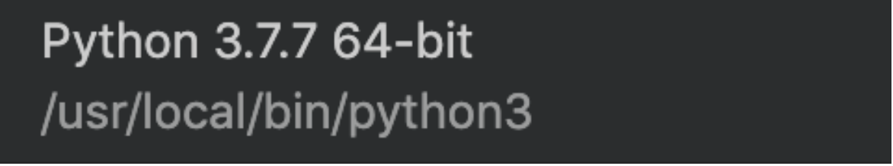
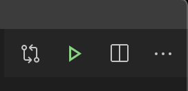

Installation
There are two main things we want to install here. First, we want to install python and also a code editor called Visual Studio Code. You can think of a code editor as the Microsoft Docs for code. Throughout, make sure you are installing python3!
- Step 1
-
Open terminal on your macbook. You can do a spotlight search or go into LaunchPad. The icon for terminal looks like this:
 - Step 2
-
First, we want to install Homebrew, which is a package that helps with installing Python. Type the following into terminal, which is from the website http://brew.sh/.
/bin/bash -c "$(curl -fsSL https://raw.githubusercontent.com/Homebrew/install/master/install.sh)"Terminal would also prompt you for your password to install onto your device. Enter your macbook's password and press return. Keep in mind that nothing should show up when you are typing your password for protection.
Accept if terminal prompts you for installation. The installation would take a few minutes.
- Step 3
-
Now that Homebrew has finished installing, we want to install Python with Homebrew. Type in the following in the Terminal:
brew install python3The installation will take another couple minutes
- Step 4
-
Step 3 should install python3 along with pip3, which is an installation package for python libraries. Type in the following to terminal to install the libraries required for this course:
pip3 install PillowIn the future, if you would like to install libraries to play around with, you can find python libraries online and install them with pip3. A library basically supplements your code with packages of code that other people have written. One big advantage of python is that many people have made such libraries, resulting in lots of variety and support.
- Step 5
-
Now we want to start installing our code editor Visual Studio Code
Install VSCode from https://code.visualstudio.com/download
- Step 6
-
After setting up VSCode we want to add an 'Extension', do this by clicking this icon on the top left:
- Step 7
-
Type in 'Python' into the search bar and install it
 - Step 8
-
Check that the bottom left corner indicates that you are running Python 3.7.X
 - Step 9
-
If the version is not 3.7.X, click on it and a pop-up selection screen should come up. From the selection screen, choose the option that is most similar to the following image:
 - Step 10
-
Now that you have installed python, we want to check whether there are any problems before starting the course! We should have provided those who have signed up a file called installation_test.py. Open the file and run it with the green play button at the top right corner of VSCode:

If the file successfully runs, you're all set! If not, reread the instructions and see if you have missed anything.
If you are still unable to install after rereading the instructions, send us a description and/or an image to describe what went wrong and we will help you out!